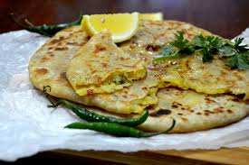

Aloo Paratha Recipe

An Aloo Paratha in the morning breakfast with a cup of tea almost hallucinates me to touch heaven early.
It is very easy to make and also takes only ~30 mins.
Ingredients
For the Dough
- 2 cups whole wheat flour
- 1 tbsp salt
- 2 tbsp gram flour
- 1/2 tsp carom seeds (ajwain)
- 1 tbsp ghee
- water as required
- 2 tbsp oil
For the filling
- 2 large potatoes, boiled and grated
- 1 inch ginger, grated
- 2-3 green chillies, finely chopped
- 1 tbsp fresh coriander leaves
- salt to taste
- 1/2 tsp coriander powder
- 1 tsp chilli powder
- 1/2 tsp cumin powder
- 1 tsp garam masala
- 1/2 tsp dried fenugreek leaves (methi)
- 1/4 tsp dry mango powder
- Ghee for roasting
- butter cubes for garnish
- yogurt to serve
- pickle to serve (mango pickle preferred)
Steps (Instructions)
Make Potato Stuffing
Home